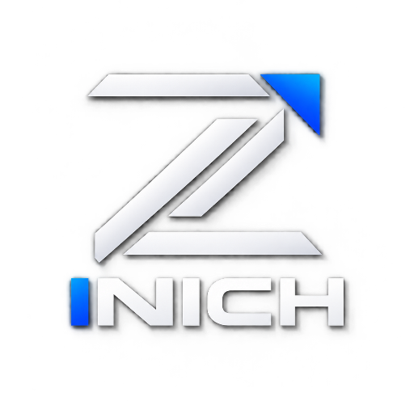
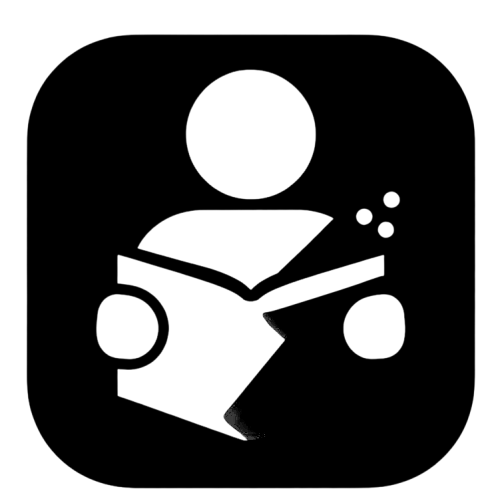

01
Education Technology
Digital learning tools that make educational resources easier to access, understand and use — online or offline.
Explore product ↗
ZINICHWe build practical software, digital products, and education technology experiences designed to solve real problems and help people move forward with confidence.
ZINICH is a technology company focused on creating software that is practical, accessible and built to last.
From education technology to future-facing digital products, our work sits where technology meets everyday human needs. We start with a problem, understand the people affected by it, then build a simple path forward.
Start a conversation →We believe great technology should feel clear, intentional and human — not complicated for the sake of being complicated.
Our solutions are designed to be useful today while leaving room for tomorrow.
Digital learning tools that make educational resources easier to access, understand and use — online or offline.
Explore product ↗Focused apps and platforms built around clear user needs, from the first screen to the final interaction.
Exploring practical AI experiences that help people learn, create, analyze and solve problems.
Web experiences, APIs and lightweight systems that connect products and people without unnecessary complexity.

Learning technology made for students who need their resources close at hand.
ZINICH LM is our education-focused product line, created around the realities of learning with limited connectivity. Its offline-first approach brings curriculum resources and learning experiences directly to the learner's device.
When a project needs more than a website, we can help turn an idea into a working digital experience.
Fast, responsive and purposeful websites.
↗Mobile experiences built around real users.
↗Interfaces that make products easier to use.
↗Turning a product idea into a practical roadmap.
↗We are not building technology just to say it exists. We are building tools that can earn trust, create opportunity and make difficult things feel possible.
Tell us what you are working on. This site is ready for your official contact channels when you decide which email and social accounts ZINICH will use.